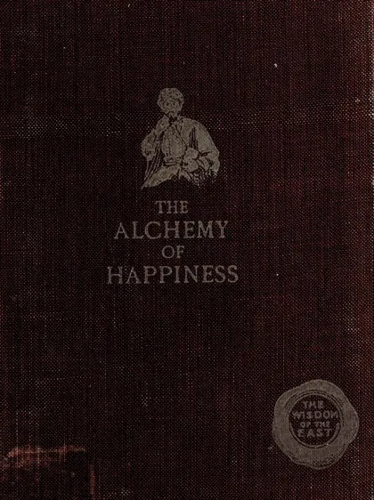

كيمياء السعادة
The Alchemy of Happiness (Inggris)
Baca The Alchemy of Happiness (Inggris) (كيمياء السعادة) karya Imam al-Ghazali · tr. Claud Field (1910) secara gratis di Maktabah Ilmu: teks Indonesia, Inggris (sebagian terjemah dibuat AI). Tanpa daftar, tanpa iklan.
Buka kitab iniLihat lemari ilmuDaftar isi
- Introduction · Happiness
- Chapter I · The Knowledge Of Self
- Chapter II · The Knowledge Of God
- Chapter III · The Knowledge Of This World
- Chapter IV · The Knowledge Of The Next World
- Chapter V · Concerning Music And Dancing As Aids To The Religious Life
- Chapter VI · Concerning Self-Examination And The Recollection Of God
- Chapter VII · Marriage As A Help Or Hindrance To The Religious Life
- Chapter VIII · The Love Of God